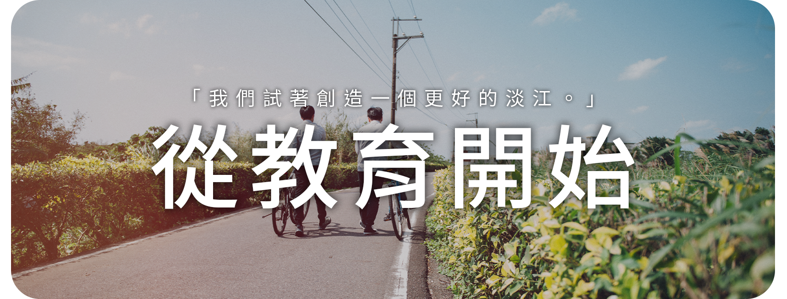

師長的一封信
班級如何成立的？
訓練你「閱讀理解、邏輯組織、探索創新」的能力。為了消除台灣社會對人文社會科學之既有印象，引發學生學習興趣，建立學生多元思想與培養良善價值觀，進而引領學生在高中階段投入研究人文社會科學行列。因此「淡江高中」與「淡江大學策略聯盟」，共同開辦「人文社會班」。

「人文社會班像是一個大家庭」
師長的一封信
訓練你「閱讀理解、邏輯組織、探索創新」的能力。為了消除台灣社會對人文社會科學之既有印象，引發學生學習興趣，建立學生多元思想與培養良善價值觀，進而引領學生在高中階段投入研究人文社會科學行列。因此「淡江高中」與「淡江大學策略聯盟」，共同開辦「人文社會班」。
師長的一封信
人文社會科學班的教育是由老師、學生、家長共同合作，攜手培育具備解決問題與獨立思考能力，並擁有人文關懷的主動學習者、社會行動者，以符合未來大學、社會之所需。不僅只是升學，我們更在乎學生的態度與投入，一起為台灣教育盡一份心力！
師長的一封信
人文社會班注重的是培養閱讀習慣、報告能力、研究、發表的能力，這些能力將是在未來大學生活中基本具備的本領，人文社會班比普通班級更早接觸大學的教育方式，因此需要提早進行能力訓練。